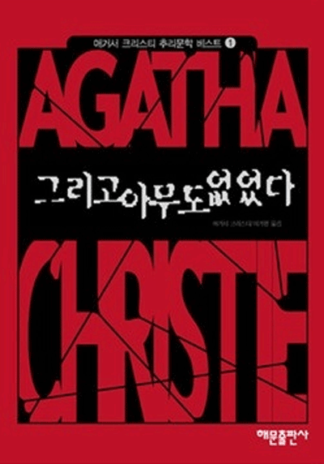

이 메뉴에서는 전에 읽었던 기억에 남는 책들을 소개해 보려 합니다.
배신의 식탁

배신의 식탁은 미국인 기자인 마이클 모스의 저서로 설탕,소금,지방을 이용한 세계적 식품 가공 기업들의 주 제품들의 변천사와
그러한 식품들의 위험성을 알리는 책이다.
오레오같은 친숙한 과자를 만드는 비교적 생소한 기업인 나비스코, 크래프트의 성장과정부터 코카 콜라, 콘푸로스트의 역사까지
다양한 주제의 이야기들이 실려 있었다.
가장 흥미로워 기억에 남는 내용은 콘푸로스트 제조 기업인 포스트를 세운 사람이 콘푸로스트를 처음 만든 사람의 동생이었단 내용이었다.
의사였던 형과 사업가인 동생은 콘푸로스트 상업화에 대한 견해가 달랐고 결국 동생은 자신의 기업을 세우고 콘푸로스트를 팔고 대 성공했다 한다.
미국의 잘 모르는 식품 가공 기업들에 대한 흥미로운 일화들과 가공식품에 대한 경각심을 일깨워주는 책으로 기회가 누구나 흥미롭고 유익하게 읽을 만한 책이다.
앵무새 죽이기
1930년대 미국의 어느 작은 마을 메이콤을 배경으로 펼쳐지는 이 소설은 그 시대의 명암을 그대로 드러낸다.
주인공 스카웃과 항상 붙어 다니는 오빠 젬과 친구 딜,변호사인 아빠 애티커스 핀치,이웃에 사는 은둔자 부 래들리 등의 등장인물이 등장하며
주인공의 아빠 애티커스 핀치는 살인 누명을 쓴 흑인을 변호하고 재판장의 모두가 피고의 무죄를 깨닫지만 불평등한 당시의 현실때문에 결국 유죄를 선고받는다.
앵무새 죽이기는 출간된 지 50년이 넘은 지금까지도 정의와 양심에 대한 깨달음을 주고 있는 명작 중 명작이다.

그리고 아무도 없었다
현재 독서중인 그리고 아무도 없었다는 추리소설의 여왕 아가사 크리스티의 작품으로 현재까지도 손꼽히는 명작이다.
인디언 섬에 초대받은 10명의 사람들은 전부 누군가에 의해 살인죄를 선고받는다.
하나 둘씩 의문의 죽음을 당하고 집 주인은 모습을 드러내지 않는다.
손님들은 서로를 의심하기 시작한다.
흥미로운 연출과 긴장감으로 읽는 내내 지루하지 않은 소설로 요즘 이 책 덕분에 지루하지 않다.